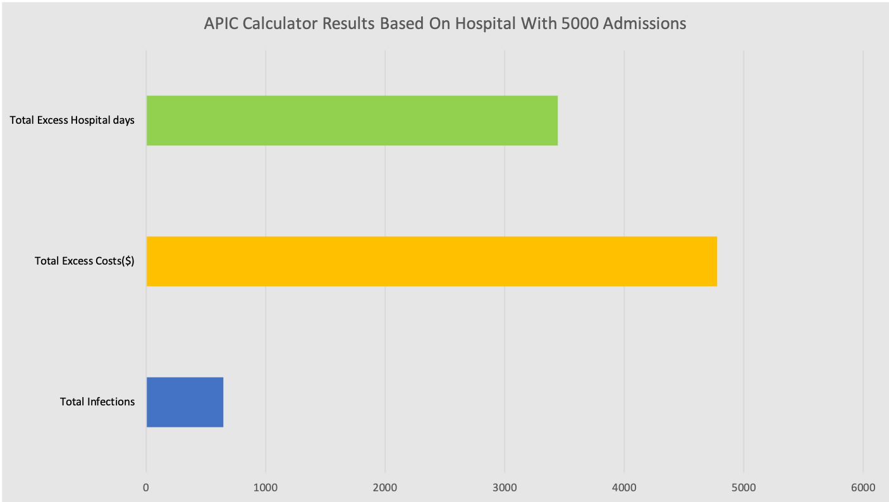

An interactive website where users can change parameters to the study, and from that, simulate the spread of a nosocomial disease throughout a hospital.
The Association of Professionals in Infection Control and Epidemiology have developed a cost calculator that takes parameters such as number of patients admitted per year. The calculator then gives the user the option to enter the number of infections, cost per infection and length of stay per infection. The calculator provides average figures based on medical literature if the user doesn’t provide figures. The calculator then creates a table with the various results and there is also a page that displays graphs as well. The benefits of using the APIC Calculator is that it allows infection control specialists and hospitals to predict the cost of nosocomial infections in their hospitals and attempt to try and reduce it.
The graph below shows the results provided by the APIC Calculator on a sample admission size of 5000 patients per year. The results are calculated using average figures based on medical literature but the user is free to enter their own paramerers for their hospital perhaps to have a closer determination of the number of infections, the added cost and extra days used in the hospital due to nosocomial infections.
APIC Calculator Result Based On Hospital With Different Admission Size: